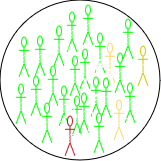
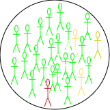

Introduction to Mathematical Modelling of Infectious Diseases
Last updated on 2025-04-15 | Edit this page
Preface
This document is prepared for the participants of the Outbreak Analytics in R course, organized by the Epiverse-TRACE team. Its purpose is to provide a concise introduction to the mathematical theory behind modeling infectious epidemics. We will use the Susceptible, Exposed, Infected, and Recovered (SEIR) model, applicable to diseases like measles, mumps, rubella, as an example.
Scenario
Suppose a new infection has been detected in a closed community of \(\mathbf{N}\) individuals, with the infection diagnosed in a single individual. The remaining \(\mathbf{N-1}\) individuals are all at risk of getting the infection and are considered susceptible (\(\mathbf{S}\)). An infected person makes \(k\) contacts and have a probability \(p\) of infecting each one if susceptible, and we can call this \(\beta\) for short. This represents the average rate at which an infected individual can transmit the infection to a susceptible individual.
Depending on the nature of the disease, a newly infected individual may take time to show symptoms, known as the incubation period (time from infection to symptoms), and time to become infectious, known as the latent period (time from infection to infectiousness). The latent period is relevant to the SEIR-type models. Susceptible individuals who come into contact with an infected person and acquire the infection first move to an intermediate state called exposed (\(\mathbf{E}\)). There they spend, on average, \(\frac{1}{\alpha}\) units of time (the latent period) and then move to the infected class (\(\mathbf{I}\)) at a constant rate \(\alpha\). Infected individuals are removed (either by recovery or death) from \(I\) at a constant rate \(\gamma\), with \(\frac{1}{\gamma}\) representing the average recovery duration. Upon recovery, they gain lifelong immunity against the current infection, meaning they do not become susceptible again, and they move to the recovered class (\(\mathbf{R}\)) (see Figure 1). These are some assumptions for modelling purposes and may not particularly reflect the biological underlying processes.
 


The four S-E-I-R classes considered in the \(\mathbf{SEIR}\) model. The number of individuals in each change overtime and thus are functions of time \(t\), and the total population at any time \(t\) is \(N(t)= S(t) + E(t) + I(t)+ R(t)\). The rates of change between these classes are captured mathematically through four differential equations as follows:
\[ \begin{eqnarray} \frac{dS}{dt} &=& -\beta \frac{S.I}{N} & & \\ \frac{dE}{dt} &=&\beta \frac{S.I}{N} &-& \alpha E\\ \frac{dI}{dt} &=& \alpha E &-& \gamma I \\ \frac{dR}{dt} &=& \gamma I & &\\ \end{eqnarray} \qquad(1)\]
At time \(t_0=0\), we assume there is one infected person (\(\mathbf{I}_0 =1\)); no exposed (\(\mathbf{E}_0 = 0\)) or recovery (\(\mathbf{R}_0 = 0\)). and while all other individuals remain susceptible (\(\mathbf{S}_0= \mathbf{N} -\mathbf{I}_0 = \mathbf{N} -1\)). These are known as the initial values of the system in Equation 1.
Since the compartments represent individuals, their values must always be non-negative. This characteristic is referred to as the positivity of the solution. Before delving into mathematical details of how to solve Equation 1, a few key observations can be made:
At the onset of an epidemic, the number of susceptible individuals begins to decrease exponentially, while the number of exposed and infectious individuals increases. As the epidemic progresses, the susceptible population becomes depleted, and the exposed and infectious groups reach their peak before starting to decline. Meanwhile, the number of recovered individuals continues to increase without decreasing. (Note that these observations hold true only when \(\mathcal{R}_0 > 1\), as we shall see later in this document).
The infection will start spreading in the community only when \(\frac{\mathbf{dE}}{dt} > 0\) or \(\frac{\mathbf{dI}}{dt} > 0\), and taking the values of these two terms from Equation 1 leads to
\[ \begin{eqnarray} \beta .\frac{S.I}{N} &-& \alpha .E > 0\\ \alpha. E &-& \gamma .I > 0. \end{eqnarray} \qquad(2)\] Adding the two equations in Equation 2, gives \(\frac{\beta}{\gamma} > \frac{\mathbf{N}}{\mathbf{S}}\). At time \(t=0\), we have \(\mathbf{S} = \mathbf{N}-1 \approx \mathbf{N}\). Therefore, the infection will take off if \(\frac{\beta}{\gamma} > 1\). This is a very interesting observation – It tells that the epidemic increases if new infections are generated at a higher rate than existing infections recover.
The ratio \(\frac{\beta}{\gamma}\) represents the basic reproduction number, \(\mathcal{R}_0\), which is defined as the average number of new infections caused by a single infected individual in a fully susceptible population. Intuitively, \(\beta\) alone only describes the rate of new infections, without considering how long each infected individual contributes to transmission. By accounting for the infectious period \(\frac{1}{\gamma}\), we obtain a complete measure of each infected individual’s impact on transmission over their entire infectious duration. \(\mathcal{R}_0\) is a crucial metric for understanding the transmissibility of an infectious disease. A higher value of \(\mathcal{R}_0\) indicates a more transmissible disease.
The final size of an epidemic—the total number of individuals who will ultimately be infected—is the cumulative count of infections as predicted by the model. However, If only the \(\mathcal{R}_0\) is known, it can still provide insights into the outbreak’s final size through the following equation: \[ \begin{equation} z = 1 - e^{-\mathcal{R}_0 .z} \end{equation} \qquad(3)\]
Where:
\(z\) is the final size (the fraction of the population infected),
\(\mathcal{R}_0\) is the basic reproduction number, and
\(e\) is the base of the natural logarithm.
For a detailed derivation and theoretical background on the final size equation, please refer to this article.
- Additionally, the basic reproduction number \(\mathcal{R}_0\) is crucial for determining the herd immunity threshold (HIT), which represents the minimum proportion of the population that must be immune (either through vaccination or previous infection) in order to contain the epidemic and prevent widespread transmission. The formula for the herd immunity threshold is: \[ HIT = 1 - \frac{1}{\mathcal{R}_0} \qquad(4)\]
Where:
- HIT is the proportion of the population that needs to be immune to achieve herd immunity,
As \(\mathcal{R}_0\) increases, the herd immunity threshold also increases, meaning a larger proportion of the population must be immune to prevent the epidemic from spreading.
To understand the logic behind the HIT formula, note that as time passes, immunity builds up in the population. This reduces the number of susceptible individuals, thereby decreasing the actual number of secondary cases that a typical infected person can produce. This number is called the effective reproduction number (\(\mathcal{R}_{eff}\)), and it is given as: \[ \mathcal{R}_{eff} = \mathcal{R}_0 \times \mathbf{S}.\]
For an epidemic to stop spreading, each infected person must, on average, infect fewer than one other person—meaning we need \(\mathcal{R}<1\). This condition leads to: \[\mathbf{S} < \frac{1}{\mathcal{R}_0}\]
Thus, if we can reduce the susceptible proportion \(\mathbf{S}\) below \(\frac{1}{\mathcal{R}_0}\) the effective reproduction number \(\mathcal{R}_{eff}\) will drop below 1, causing the epidemic to stop growing on average.
Measles Outbreak in Burkina Faso
Background
Measles is a highly contagious viral disease that spreads quickly, particularly in environments where people live or gather in close quarters, such as schools, healthcare facilities, or densely populated urban areas. Transmission occurs through respiratory droplets when an infected person coughs or sneezes, and the virus can remain viable in the air for up to two hours. Effective vaccines are available, offering an efficacy of 93% to 97% (About Measles, CDC), making vaccination a key tool in controlling measles outbreaks.
Given the virus’s high transmissibility, even a single introduced case of measles can trigger large outbreaks, especially in regions with low vaccination coverage. The latent (pre-infectious) period for measles is typically around 8 days, while the infectious period averages 5 days (Masters et al., 2023). The SEIR model in Equation 1 can e employed to simulate the dynamics of measles outbreaks and evaluate control measures like vaccination.
Burkina Faso Situation in Jan 2024
Burkina Faso faces recurring measles outbreaks. This can be attributed to factors such as limited healthcare access, inadequate vaccination coverage, and fragile healthcare systems. In 2023, Burkina Faso experienced a particularly severe outbreak, with over 2,000 suspected cases reported (Crisis24, 2024), prompting health authorities and international organizations to scale up vaccination campaigns in an effort to curtail the spread of the disease (Save the Children, 2024; The Cable, 2024).
We will simulate the measles outbreak in Burkina Faso using the SEIR
model in Equation 1. This will allow us to explore
the outbreak dynamics with and without interventions. For this purpose,
we will use the R package {epidemics},
which is designed for modeling infectious disease spread. In these
simulations, we will focus specifically on the number of infections,
which represents a subset of the total reported suspected cases.
Baseline Model
Model Assumptions and Parameters
Total Population: The population of Burkina Faso is approximately \(N\approx 22.67\) million.
-
Population Structure:
- No Age Stratification: Assume the population is homogeneous with respect to age. This means that all individuals, regardless of age, have the same susceptibility to measles and contribute equally to the transmission dynamics.
-
Initial Conditions:
- A single infectious case is introduced into the population: \(I_0 = 1\).
- The entire population, except for this one case, is initially susceptible: \(S_0 = N - 1\). This assumption simplifies the model and allows us to explore the spread of infection in the absence of immunity. Although real populations typically have some immunity due to vaccination or prior infection.
- No individuals are in the exposed stage at the start: \(E_0 = 0\).
- No individuals have recovered: \(R_0 = 0\).
latent Period: The average latent period for measles is around 8 days (the time period between exposure and becoming infectious), so the transition rate from exposed to infectious individuals is: \(\alpha = \frac{1}{8}\).
Infectious Period: The average infectious period lasts for 5 days, which means the recovery rate is: \(\gamma = \frac{1}{5}\).
-
Basic Reproduction Number \(\mathcal{R}_0\):
- \(\mathcal{R}_0 =15\). For measles this value typically ranges from 12 to 18, or even more Fiona, et al.
- This makes the transmission rate \(\beta = \mathcal{R}_0 \gamma = 3\)–meaning each infectious individual causes 3 new infections per day in a fully susceptible population.
By applying these assumptions and parameters to Equation 1, we can simulate the potential trajectory of the measles outbreak using the syntax provided by the {epidemics} package as shown in the below is code chunk.
R
# Loading libraries
library(dplyr)
library(ggplot2)
library(epidemics)
R
# Define the population structure for Burkina Faso
bfaso <- epidemics::population(
name = "Burkina Faso",
contact_matrix = matrix(1), # Well-mixed population
demography_vector = 22.67e6, # Population size
# Initial conditions: Susceptible, exposed, Infectious, vaccinated, recovered
initial_conditions = matrix(
c(1 - 1 / 22.67e6, 1 / 22.67e6, 0, 0, 0),
nrow = 1, ncol = 5
)
)
# Run the SEIR model simulation
output <- epidemics::model_default(
population = bfaso,
transmission_rate = 15 / 5, # R0/infectious period = 15/5 = 3
infectiousness_rate = 1 / 8, # 1/latent period (pre-infectious phase)
recovery_rate = 1 / 5, # 1/infectious period
time_end = 120, # Simulation over 120 days
increment = 1 # Daily increments
)
# Plot the epidemic curve for susceptible, exposed, infectious, and recovered
output %>%
filter(compartment %in% c("exposed", "infectious")) %>%
ggplot(aes(
x = time,
y = value / 10^6, # Scale to millions
col = compartment,
linetype = compartment
)) +
geom_line(linewidth = 1.5) +
theme_bw() +
theme(
legend.position = "top"
) +
labs(
x = "Simulation Time (days)",
y = "Individuals (in millions)",
caption = expression(
paste(
"The dynamics of SEIR model with ",
italic(R)[0], "= 15, ",
"showing the trajectories of number of exposed and infected individuals"
)
)
)
Expected Epidemic Size & Herd Immunity
The finalsize package implements Equation 3 for calculate the expected proportion of the population that will be infected given a specified basic reproduction number \((\mathcal{R}_0)\). The calculation can be done as follows:
R
finalsize::final_size(r0 = 10)
OUTPUT
demo_grp susc_grp susceptibility p_infected
1 demo_grp_1 susc_grp_1 1 0.9999546For \(\mathcal{R}_0 \geq 10\), the results indicate that nearly the entire population is expected to be infected by measles. The \(HIT\) needed to contains the epidemic is about \(93\%\), using the formula given in Equation 4.
Age-Structured Model
The age structure of Burkina Faso is characteristic of a young population, with a majority of the population being under 25 years old. According to recent estimates (United Nations, 2023; Central Intelligence Agency, 2023; World Bank, 2023), the age structure is broken down as follows:
- \([0\to15)\) years: ~ 44 (43-45)% of the population
- \([15\to 25)\) years: ~19.5 (19-20)%
- \([25\to 55)\) years: ~29 (28-30)%
- \([55\to 65)\) years: ~5 (3-5)%
- \(65+\) years : ~2.5 (2-3)%
Contact Matrix
A contact matrix typically consists of rows and columns representing different age groups, where each cell indicates the average number of contacts between individuals of the age group corresponding to that row and column.
Although we do not have a direct access for contact matrix for Burkina Faso, we can resort for a hypothetical contact matrix based on general assumptions about high contact rates among younger populations and lower rates among older age groups:
| [0-15) | [15-25) | [25-54) | [55-65) | 65+ | |
|---|---|---|---|---|---|
| [0-15) | 20 | 10 | 5 | 2 | 1 |
| [15-25) | 10 | 15 | 10 | 4 | 2 |
| [25-55) | 5 | 10 | 15 | 6 | 3 |
| [55-65) | 2 | 4 | 6 | 10 | 5 |
| \(65+\) | 1 | 2 | 3 | 5 | 10 |
R
# Initial conditions: one in every 1 million is infected
bf_pop <- 22.67e6
contact_matrix <- matrix(
c(
20, 10, 5, 2, 1, # Contacts from 0-14 years
10, 15, 10, 4, 2, # Contacts from 15-24 years
5, 10, 15, 6, 3, # Contacts from 25-54 years
2, 4, 6, 10, 5, # Contacts from 55-64 years
1, 2, 3, 5, 10
), # Contacts from 65+ years
nrow = 5, # Number of rows
byrow = TRUE, # Fill the matrix by rows
dimnames = list(
c("[0-15)", "[15-25)", "[25-55)", "[55-65)", "65+"),
c("[0-15)", "[15-25)", "[25-55)", "[55-65)", "65+")
)
)
# Define the demography vector for Burkina Faso
demography_vector <- c(0.44, 0.195, 0.29, 0.05, 0.025) * bf_pop
names(demography_vector) <- rownames(contact_matrix)
demography_vector
OUTPUT
[0-15) [15-25) [25-55) [55-65) 65+
9974800 4420650 6574300 1133500 566750 R
# scale the contact matrix so the largest eigenvalue is 1.0
# this is to ensure that the overall epidemic dynamics correctly reflect
# the assumed value of R0
contact_matrix <- contact_matrix / max(Re(eigen(contact_matrix)$values))
# divide each row of the contact matrix by the corresponding demography
# this reflects the assumption that each individual in group {j} make contacts
# at random with individuals in group {i}
contact_matrix <- contact_matrix / demography_vector
# Print the contact matrix
# contact_matrix
# Define the population structure for Burkina Faso
initial_i <- 1 / bf_pop
initial_conditions <- c(S = 1 - initial_i, E = 0, I = initial_i, R = 0, V = 0)
# Replicate initial conditions for all age groups
initial_conditions_matrix <- rbind(
initial_conditions,
initial_conditions,
initial_conditions,
initial_conditions,
initial_conditions
)
rownames(initial_conditions_matrix) <- rownames(contact_matrix)
# Print the initial conditions
# initial_conditions_matrix
# Create the population object
bf_population <- epidemics::population(
name = "Burkina Faso",
contact_matrix = contact_matrix,
demography_vector = demography_vector,
initial_conditions = initial_conditions_matrix
)
# Print the population object
# bf_population
R
# Run the epidemic model
output1 <- epidemics::model_default(
population = bf_population,
transmission_rate = 15 / 5, # R0/infectious period = 15/5 = 3
infectiousness_rate = 1 / 8, # 1/latent period (pre-infectious phase)
recovery_rate = 1 / 5, # 1/infectious period
time_end = 120, # Simulation over 120 days
increment = 1 # Daily increments
)
# Plot the epidemic curve
output1 %>%
filter(compartment %in% c("exposed", "infectious")) %>%
ggplot(aes(
x = time,
y = value,
col = demography_group,
linetype = compartment
)) +
geom_line(linewidth = 1.2) +
scale_y_continuous(labels = scales::comma) +
scale_colour_brewer(palette = "Dark2", name = "Age group") +
expand_limits(y = c(0, 500e3)) +
coord_cartesian(expand = FALSE) +
theme_bw() +
theme(
legend.position = "top",
legend.text = element_text(size = 10, hjust = 0, lineheight = 121)
) +
labs(
x = "Simulation time (days)",
linetype = "Compartment",
y = "Individuals",
caption =
expression(
paste(
"SEIR model showing the trajectories of the number of ",
"exposed and infected individuals ",
italic(R)[0], " = 15 for different age groups."
)
)
) +
guides(
color = guide_legend(nrow = 2)
)

Effective Reproduction Number (\(\mathcal{R}_{eff}\))
Age-structured models account for heterogeneous characteristics in the population, such as:
- Demographic differences in social contacts,
- Variations in demographic distribution, and
- Differences in susceptibility to infection.
These factors result in different \(\mathcal{R}_0\) values for each age group. The effective reproduction number \(\mathcal{R}_{eff}\) represents the overall reproduction number across all age groups while accounting for these differences. It is calculated using the following formula:
\[ \begin{equation} \mathcal{R}_{eff} = \rho(C) \lambda \gamma \end{equation} \qquad(5)\]
Where:
\(\rho(C)\) is the largest eigenvalue of the contact matrix \(C\), which is derived from the social contact patterns, scaled by the population distribution across different demographic and susceptibility groups.
\(\lambda\) is the force of infection, which measures the rate at which susceptible individuals are infected. This is distinct from the effective transmission rate, often denoted as \(\beta\).
\(\gamma\) represents the infectious period, which is the average duration an individual remains infectious.
The finalsizepackage implements Equation 5, and we can use it to calculate the \(\mathcal{R}_{eff}\) for our age-structured model, as follows:
R
r0 <- 15 # basic reproduction number
# define the number of age and susceptibility groups
n_demo_grps <- length(demography_vector)
n_risk_grps <- 5
# In this example, risk varies across groups
susceptibility <- matrix(
data = c(0.80, 0.5, 0.3, 0.2, 0.1), nrow = n_demo_grps, ncol = n_risk_grps
)
# risk does not vary within groups
p_susceptibility <- matrix(
data = 1, nrow = n_demo_grps, ncol = n_risk_grps
)
# p_susceptibility rows must sum to 1.0
p_susceptibility <- p_susceptibility / rowSums(p_susceptibility)
reff <- finalsize::r_eff(
r0 = r0,
contact_matrix = contact_matrix,
demography_vector = demography_vector,
susceptibility = susceptibility,
p_susceptibility = p_susceptibility
)
reff
OUTPUT
[1] 8.529089Question
\(\mathcal{R}_{eff}\) vs \(\mathcal{R}_0\): How different is the \(\mathcal{R}_{eff}\) value from \(\mathcal{R}_0\)?
\(\mathcal{R}_{eff}\) more accurately reflects the transmission potential because it takes into account both the inherent transmissibility of the pathogen and the actual state of susceptibility in the population.
Interventions models
Interventions against measles include prevention, control, and
treatment. Controlling its spread requires a combination of public
health measures, such as reducing contact (e.g., curfew and school
closures in Samoa),
and vaccination. In this section, we will simulate the SEIR model with
interventions using the {epidemics} package.
Contacts Reduction Model
Reducing contact by a certain percentage impacts the transmission
rate. This reduction can be achieved through measures such as
quarantine, limiting public gatherings, and regular screening in
healthcare settings. To include such interventions in the baseline SEIR
model, the {epidemics} package provides an object called
interventions, which is added to the model definition as
shown in the code chunk below. We assume that a school closure will
reduce the frequency of contacts within and between different age
groups. We assume that school closures will reduce the contact between
school-aged children (aged 0-15) by 0.5 and will cause a small reduction
(0.01) in the contact between adults (aged 15 and over).
R
reduced_contacts <- epidemics::intervention(
name = "school closure",
type = "contacts",
time_begin = 30,
time_end = 30 + 60,
reduction = matrix(c(0.5, 0.01, 0.01, 0.01, 0.01))
)
# Run the epidemic model
output2 <- epidemics::model_default(
population = bf_population,
transmission_rate = 15 / 5, # R0/infectious period = 15/5 = 3
infectiousness_rate = 1 / 8, # 1/latent period (pre-infectious phase)
recovery_rate = 1 / 5, # 1/infectious period
intervention = list(contacts = reduced_contacts),
time_end = 120, # Number of days to simulate
increment = 1 # Daily increments
)
To examine the effect that implementing a reduction in contact has on the daily number of new infections, we plot the results from the two models.
R
# Extract new infections data for each scenario
data_baseline <- epidemics::new_infections(output1, by_group = TRUE)
data_reduced <- epidemics::new_infections(output2, by_group = TRUE)
# Assign scenario names
data_baseline$scenario <- "Baseline"
data_reduced$scenario <- "Reduced Contact"
# Combine the data from both scenarios
data_combined <- bind_rows(data_baseline, data_reduced)
# Plot new infections over time with scenario and demographic groups
ggplot(data_combined) +
geom_line(
aes(
x = time, y = new_infections,
col = demography_group, linetype = scenario
)
) +
# Set axis scaling and formatting
scale_y_continuous(labels = scales::comma) +
scale_linetype_manual(
name = "Scenario",
values = c(
Baseline = "dashed",
"Reduced Contact" = "solid"
)
) +
scale_colour_brewer(
palette = "Dark2",
name = "Age Group"
) +
expand_limits(y = c(0, 1e3)) +
coord_cartesian(expand = FALSE) +
theme_bw() +
theme(
legend.position = "top"
) +
labs(
x = "Simulation Time (days)",
y = "New Infections",
linetype = "Scenario",
caption =
expression(
paste(
"New infections under baseline and reduced transmission rate (",
beta,
") for different age groups."
)
)
) +
# Adjust legend display to fit in two rows
guides(
color = guide_legend(nrow = 2)
)

Vaccination Model
An effective vaccine for measles exists, known as the measles, mumps,
and rubella (MMR) vaccine, and many countires, including Burkina
Faso, incorporates it as part of their national immunization
strategy. The effect of vaccination with MMR vaccine varies slightly
depending on the vaccination rate per age at which it is administered
and the number of doses received. For example, let us say the 2-doses
MMR vaccination rate is approximately \(0.01\), \(0.02\), \(0.03\), \(0.04\), and \(0.05\) for the age groups \([0\to 15)\), \([15\to 25)\), \([25\to 55)\), \([55\to 65)\), and \(65+\), respectively. The
{epidemics} package enables the incorporation of
vaccination interventions into modeling, as demonstrated in the code
chunk below.
R
vaccinate_elders <- epidemics::vaccination(
name = "Vaccination compaign",
time_begin = matrix(30, nrow(contact_matrix)),
time_end = matrix(90, nrow(contact_matrix)),
nu = matrix(c(0.01, 0.02, 0.03, 0.04, 0.05))
)
# Run the epidemic model
output3 <- epidemics::model_default(
population = bf_population,
transmission_rate = 15 / 5, # R0/infectious period = 15/5 = 3
infectiousness_rate = 1 / 8, # 1/latent period (pre-infectious phase)
recovery_rate = 1 / 5, # 1/infectious period
vaccination = vaccinate_elders,
time_end = 120, # Simulation over 120 days
increment = 1 # Daily increments
)
# Plot the epidemic curve
output3 %>%
filter(compartment %in% c("exposed", "infectious")) %>%
ggplot(aes(
x = time,
y = value,
col = demography_group,
linetype = compartment
)) +
geom_line(linewidth = 1.2) +
scale_y_continuous(labels = scales::comma) +
scale_colour_brewer(palette = "Dark2", name = "Age group") +
expand_limits(y = c(0, 3e3)) +
coord_cartesian(expand = FALSE) +
theme_bw() +
theme(
legend.position = "top",
legend.text = element_text(size = 10, hjust = 0, lineheight = 121)
) +
labs(
x = "Simulation time (days)",
linetype = "Compartment",
y = "Individuals",
caption =
expression(
paste(
"SEIR with vaccine showing the trajectories of the number of ",
"exposed and infected individuals for different age groups."
)
)
) +
guides(
color = guide_legend(nrow = 2)
)

We can visualize the outcomes of both the baseline model and the vaccine-intervention model to highlight the differences in infection dynamics. This comparison allows us to observe how vaccination impacts the spread of the disease, particularly in terms of reducing new infections, altering the epidemic curve, and potentially preventing outbreaks across different age groups. By contrasting these two models, we can better understand the effectiveness of vaccination strategies in controlling the epidemic.
R
# Load new infections data for each scenario
data_vaccine <- epidemics::new_infections(
output3,
compartments_from_susceptible = "vaccinated",
by_group = TRUE
)
# Assign scenario names
data_vaccine$scenario <- "Vaccination"
# Combine the data from both scenarios (baseline and vaccination)
data_combined2 <- bind_rows(data_baseline, data_vaccine)
# Plot new infections over time by scenario and demographic groups
ggplot(data_combined2) +
# Plot new infections with lines for each demographic group and scenario
geom_line(
aes(
x = time,
y = new_infections,
col = demography_group,
linetype = scenario
)
) +
# Scale the y-axis with comma-formatted labels
scale_y_continuous(labels = scales::comma) +
# Define custom line types for scenarios
scale_linetype_manual(
name = "Scenario",
values = c(
Baseline = "dashed",
Vaccination = "solid"
)
) +
# Use a color palette for age groups
scale_colour_brewer(
palette = "Dark2",
name = "Age Group"
) +
# Set axis limits and disable automatic expansion
expand_limits(y = c(0, 1e3)) +
coord_cartesian(expand = FALSE) +
# Apply a clean white background theme
theme_bw() +
# Customize theme for better aesthetics
theme(
legend.position = "top", # Position legend at the top
legend.text = element_text(size = 10), # Adjust legend text size
plot.caption = element_text(hjust = 0.5) # Center align the caption
) +
# Add axis labels and caption for the plot
labs(
x = "Simulation Time (days)", # x-axis label
y = "New Infections", # y-axis label
linetype = "Scenario", # Legend title for line types
caption = expression(
paste(
"New infections under baseline and vaccine-induced immunity",
"with varying efficacy (",
nu, ") across different age groups."
)
)
) +
# Adjust legend display for better readability
guides(
color = guide_legend(nrow = 2) # Split legend into two rows
)
Combining interventions
The {epidemics} package enables the integration of
multiple interventions, such as vaccination and contact reduction,
within a single model, allowing for more comprehensive simulations of
disease control strategies. The below code chunk shows how to combine
interventions together.
R
# Run the epidemic model
output4 <- epidemics::model_default(
population = bf_population,
transmission_rate = 15 / 5, # R0 / infectious period = 3
infectiousness_rate = 1 / 8, # 1 / latent period (pre-infectious phase)
recovery_rate = 1 / 5, # 1 / infectious period
intervention = list(contacts = reduced_contacts),
vaccination = vaccinate_elders,
time_end = 120, # Number of days to simulate
increment = 1 # Daily increments
)
# Plot the epidemic curve (infectious individuals)
output4 %>%
filter(compartment == "infectious") %>% # Filter for infectious individuals
ggplot(aes(
x = time, # Time on the x-axis
y = value, # Number of infectious individuals on the y-axis
col = demography_group # Color by demographic group (age)
)) +
geom_line(linewidth = 1.2) + # Line width for better visibility
# Format y-axis with commas for thousands
scale_y_continuous(labels = scales::comma) +
# Color palette for age groups
scale_colour_brewer(palette = "Dark2", name = "Age Group") +
# Ensure the y-axis starts from 0 and goes up to 500,000
expand_limits(y = c(0, 1.5e3)) +
coord_cartesian(expand = FALSE) + # Disable axis expansion
theme_bw() + # Clean, white background theme
theme(
legend.position = "top", # Place legend at the top
# Adjust text size and line height
legend.text = element_text(size = 10, hjust = 0, lineheight = 1.1),
plot.caption = element_text(hjust = 0.5) # Center align the caption
) +
labs(
x = "Simulation Time (Days)", # x-axis label
y = "Number of Infectious Individuals", # y-axis label
caption = "SEIR model with vaccination and contact reduction:
Number of infectious individuals by age group"
) +
# Split the legend into two rows for compactness
guides(
color = guide_legend(nrow = 2)
)